01 About MUNDa
MUNDa is a spatial analysis platform for data annotated in ENTMARKUS, COMARKUS and IMMARKUS. It imports XML files exported from X-MARKUS, allowing the data to be displayed and explored in an interactive GIS environment, complete with various topographic and historical administrative layers, that preserves their context and also allows for AI-assisted analysis of the spatial data.
MUNDa also allows for the visualization of spatial data in TSV and similar formats.
For more information, source code, and citation details, visit the information section in MUNDa.
The Interface
When you open MUNDa in the browser, a map appears in the main content area, displaying imported data. The interface provides two main sets of controls:
- Left Menu bar: Menu buttons to import, search and export data, and to modify map symbol settings, language options, and project information.
- Map Selection: Select a base map, show or hide historical map overlays, and adjust their opacity. Additional overlays are available through WMTS (Web Map Tile Service) services.
Left Menu Bar
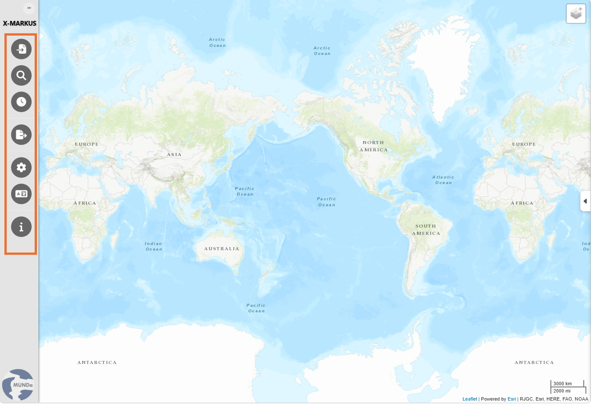
Use the icons on the left menu bar to access the following features:
Import Data: Upload a file in XML, TSV, JSON or Excel format, or paste tabular data for spatial exploration. Once the data is imported, a filtering and navigation panel appears on the right. For more information, see Importing Data.
Table Search: Search place names in imported records or the OpenStreetMap database, or filter individual table columns by keyword. For more information, see Table Search in Searching and Filtering Data.
Time Range: Filter records by a selected period. The time range is based on event time for event datasets, or on the publication time recorded in the metadata if event time is unavailable or the dataset is not event-based. You can download the time-filtered records or add them directly to the map as a new layer. For more information, see Searching and Filtering Data.
Export: Export the full imported dataset or a filtered subset in TSV, JSON, or Excel format. You can also export the map as a PNG image. For more information, see Exporting Data.
Map Marker Settings: Adjust the appearance of markers for imported records and filtered results. For more information, see Adjusting Display Settings.
Change Language: Select the interface language. Available languages are English, Traditional Chinese, Simplified Chinese, Korean, and Japanese.
Information: View project information and citation details.
Map Selection
The map selection menu allows you to manage the base map and map overlays, independently of the data layers created from filtered records.
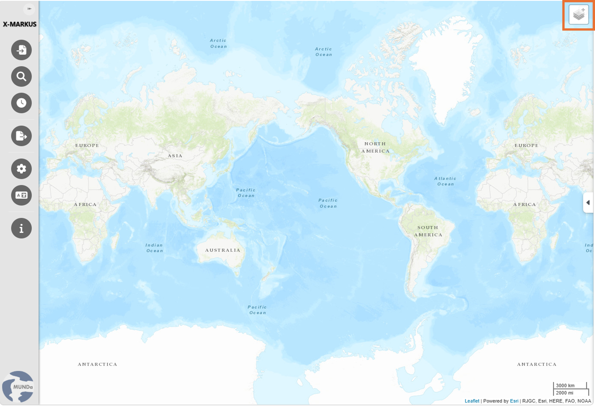
- Selecting a Base Map
- NTU Terrain
- OpenStreetMap
-
CARTO
- CartoDB Positron
- CartoDB Voyager (Color)
- CartoDB Voyager (No Labels)
-
Mapbox
- Mapbox Basic (CHT)
- Mapbox Basic (EN)
- Mapbox Street (CHT)
- Mapbox Outdoor (CHT)
- Mapbox Satellite Streets (CHT)
-
Esri
- ESRI Gray
- ESRI Dark Gray
- ESRI Topographic
- ESRI Oceans
- ESRI National Geographic
- ESRI Terrain
- ESRI Imagery
- White Background
- Displaying Historical Map Overlays
- Adding Map Overlays from Chinese Civilization in Time and Space (CCTS) WMTS Service
- Click the + button in the upper-right corner of the map selection menu.
- Select a Region Category from the dropdown menu.
- Select a WMTS Service Source from the dropdown menu.
- Click Load Live Version.
- Select one or more maps to add as overlays, and click Confirm Selection.
Select a base map from the available options. Only one base map can be selected at a time.
Select or clear the checkboxes to show or hide historical map overlays, and adjust their contrast, brightness, saturation and opacity. Multiple overlays can be selected at the same time.
MUNDa provides access to additional map overlays through WMTS (Web Map Tile Services) supplied by the Chinese Civilization in Time and Space (CCTS) system.
The selected overlays appear automatically in the current view. Use the overlay adjustment panel to adjust their contrast, brightness, saturation and opacity, or to remove them.
02 Preparing Your Data
X-MARKUS XML Files
Prepare an .xml file exported from X-MARKUS containing either the complete X-MARKUS dataset or a filtered subset. In X-MARKUS, files can be exported in three ways:
- After converting annotations: Download the complete converted dataset as an
.xml. For more information, see Converting Annotations. - From the Searching and Filtering interface: Apply filters to the converted dataset, then click export xml to download the current results. For more information, see Visualizing and Exporting Filtered Annotations.
- From the Visualizing Relations interface: Apply the required graph filters, then click XML to download the filtered subset. For more information, see Exporting the Graph.
Tabular Data
Prepare a table with field names in the first row and one record per row. Coordinates must use WGS84 decimal degrees.
| Field | Description |
|---|---|
id
|
Record identifier. |
x
|
Longitude. |
y
|
Latitude. |
date
|
Date in YYYYMMDD format.
|
text
|
Descriptive or source text. |
place
|
Place name. |
url
|
Link to an external resource. |
img
|
Image URI; separate multiple URIs with spaces. |
Additional columns can be included as needed. For details, see the DocuGIS Tabular Data Specification.
↑ Back to section top03 Importing Data
Annotation data can be imported to MUNDa by uploading a file or pasting tabular data into the Import Data dialog.Importing Data Files
Upload anXML, TSV, JSON, or Excel file through the Import Data dialog. The following instructions use an XML file as an example.
-
Click the Import Data icon in the left menu bar to open the import dialog.
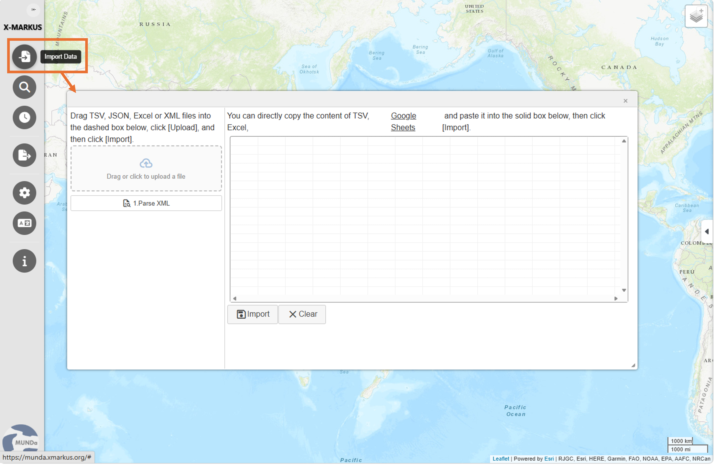
Clicking Import Data Icon to Open the Import Dialog in MUNDa -
Click Drag or click to upload a file and select your XML file.
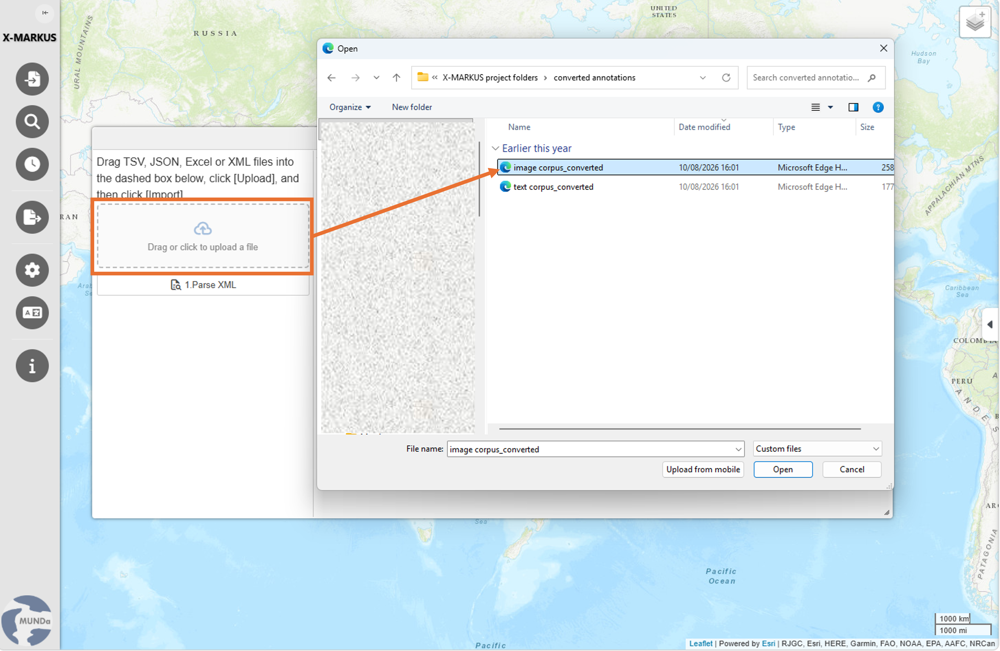
Selecting an XML File to Import into MUNDa -
Click Parse XML.
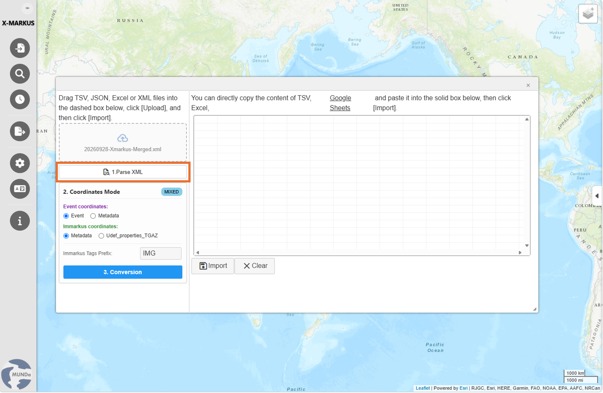
Clicking Parse XML to Process the Imported XML File in MUNDa -
Select the coordinate source for event and/or image locations:
- Event Coordinates: Choose annotated event locations or locations recorded in the metadata.
- Image Coordinates: Choose from locations recorded in the metadata or a location field set by the user in the IMMARKUS data model.
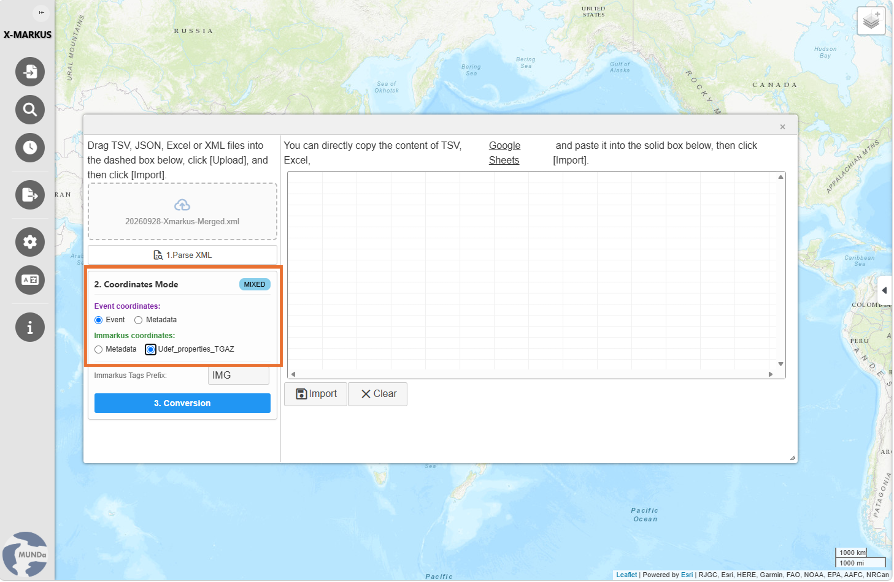
Selecting Annotated Event Locations as Event Coordinates and the Field Set in IMMARKUS (Annotated TGAZ ID) as Image Coordinates When Importing XML into MUNDa - For IMMARKUS datasets, specify a prefix for the annotation tag group displayed in the filter panel. The default prefix is IMG.
- Click Conversion.
-
Enter a data layer name or keep the system default, then click OK.
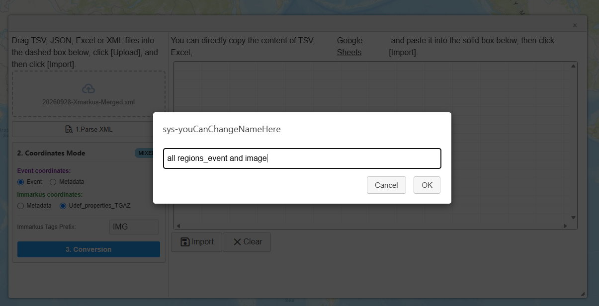
Entering a Data Layer Name for the Data Layer Created from the Imported XML File in MUNDa -
The parsed data appears as a table in the preview area of the import dialog. Click Import to add it to the map.
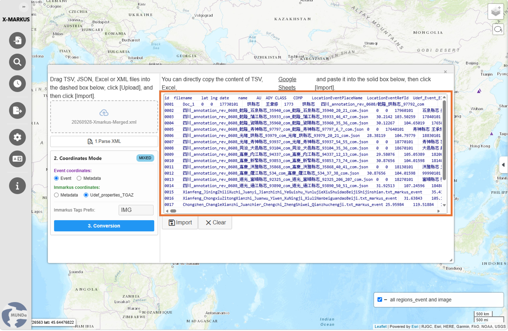
Reviewing the Parsed Data in the Preview Area of the Import Dialog -
Repeat the process to import additional files as separate data layers. In the data layer panel in the lower-right corner, you can:
- Tick or untick a layer name to show or hide it on the map.
- Remove the data layer by clicking the delete icon.
Toggling Data Layers On and Off on the Map Removing a Data Layer from the Map
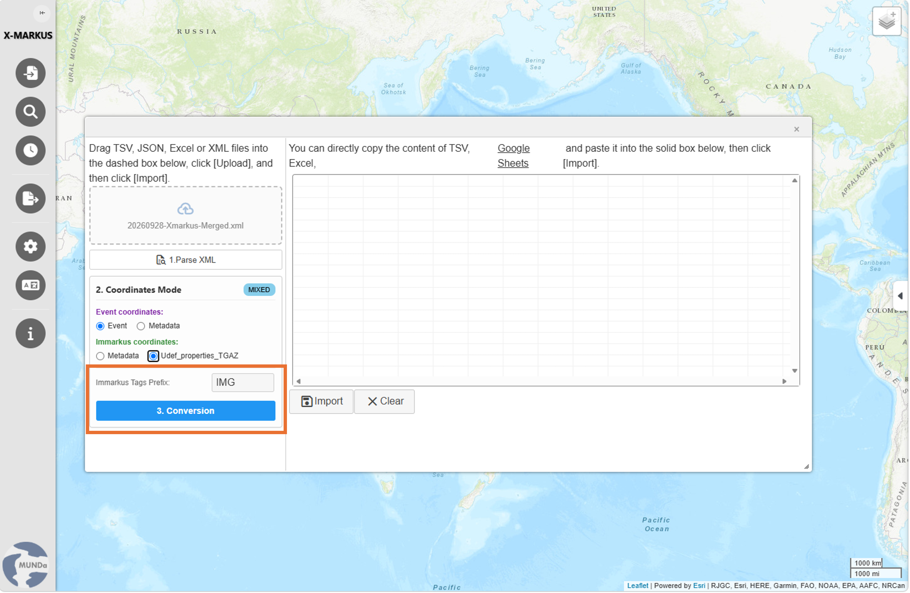
Pasting Tabular Data
Copy tabular data, including the header row, from a TSV file, Excel spreadsheet or Google Sheets document and paste it into the input area in the Import Data dialog.
- Click the Import Data icon in the left menu bar to open the import dialog.
- Paste the copied content into the data input area.
- Click Import to add the data to the map.
04 Navigating the Map
Showing Data Density with Heatmap and 3D Bars
When multiple records share the same location, MUNDa displays them as a single marker. To compare record density across an area, use the heatmap or 3D bars view.
-
Heatmap: Click the heatmap icon
in the left-hand toolbar to display record density in the current view.
Areas with more records appear in warmer colors.
Clicking the Heatmap Icon to Show Record Density in the Current Map View - 3D Bars: Click the 3D bars icon in the left-hand toolbar to display a bar for each area. Bar height corresponds to the number of records. Hover over a bar to see the number of records at that location.
Viewing Data Point Details
Click a marker to open the Info panel on the right side of the map and view annotation records at that location.
For event records, the Info panel shows the event tag list, inscription text, comments, and metadata recorded by the user. You can also display all entity tags set by the user in the inscription text.
For image records, the Info pane shows the image, along with the subfolder and image metadata recorded by the user. You can also highlight annotated regions according to the tags set by the user to view their properties.
When no filter is applied, the Info pane shows only the first record at a location. To view all records or records that meet specific criteria at one or more locations, first apply a Tag filter or Map filter to the dataset. For more information, see Searching and Filtering Data.
↑ Back to section top05 Searching and Filtering Data
Map Search
MUNDa provides two ways to search for records on the map: Tag filters and Map filters. You can view the filtered results in different filter modes, conduct AI-assisted analysis on the filtered results, and view the individual annotation information in the Info pane (for more information, see Viewing Data Point Details).Searching Imported Records with Tag Filter
The Tag Filter mode provides three tabs for filtering, searching and exporting records.After you apply a filter, MUNDa highlights matching records on the map. When multiple records appear at a location, MUNDa groups them into a numbered cluster.
Zoom in to expand clusters into individual markers, then click a marker to view its annotation details in the Info pane.
-
Filter Tab
- Hierarchical Filtering: Use the tag-category dropdown to filter records by their annotation tags. Navigate through the tag hierarchy and select the tag values you want to include.
- Select All: Select all values in the current tag category.
- Clear All: Clear the current tag selections.
- Invert Selection: Invert the current tag selections.
- Load All Data: Reload all data for filtering.
- Reset: Clear filter conditions.
- Advanced Filtering: Use a combination of tag selections or keywords to filter records.
- Choose Hierarchy Builder or Keyword Search to build a new condition.
- Select a tag category or enter a keywordfor each condition. For hierarchy builder, if the tag has a hierarchical structure, you can select subcategories level by level.
- Click Add to Pool to add the condition to the Filter Pool.
- In the Filter Pool, choose Match ANY (OR) or Match All (AND) to combine the conditions.
- Click Search Data to apply the filters and view the matching records on the map.
Navigating the Tag Hierarchy in the Filter Tab for a Subset Containing Text and Image Annotations The total number of records matching your selection appears at the bottom of the hierarchical filter section.
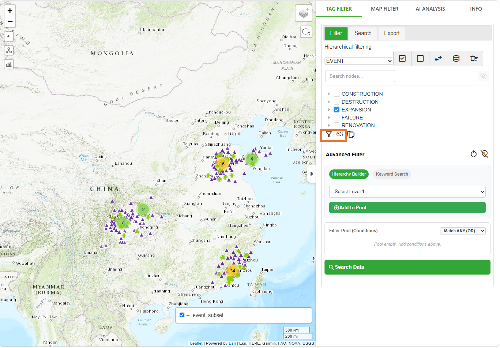
Viewing the Total Number of Records Matching the Current Tag Selection in the Filter Tab The shortcut icons next to the tag-category dropdown let you adjust tag selections and reload or clear filter data:
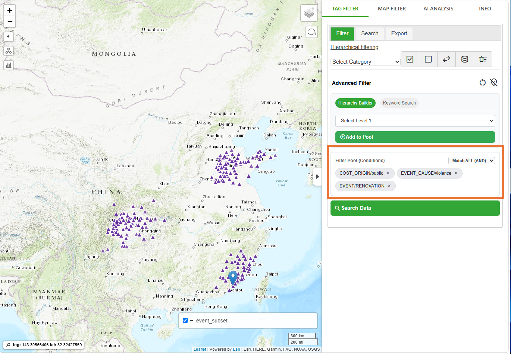
Searching for Renovation Events Caused by Violence Where the Cost Origin Is Public in the Event Subset Using the Advanced Filter You can click the icon in the upper-right corner of the advanced filter section to reset the filter conditions, or click icon to hide the markers on the map.
-
Annotation Tag Keyword Search: Enter a keyword to search only within text or image annotation tags, including tag categories and normalizations.
Searching for Records with "Renovation" in Their Annotation Tags Within a Subset Using the Search Tab -
Document Keyword Search: Enter a keyword to search the full text in textual datasets or the metadata in image datasets.
Searching Within a Subset Containing Both Textual and Image Datasets for Records with "城垣" in Their Full Text or Metadata Using the Search Tab - : Run the search.
- : Clear the marker highlights on the map.
- : Clear the keyword input.
- : Add the search results as a new data layer on the map.
In both modes, MUNDa displays the number of matching records and their percentage of the entire dataset below the search bar and highlights them on the map.
Use the following icons to manage your search and results:
TSV, JSON, or KML format. You can also export the entire dataset in TSV or EXCEL format.
Searching Imported Records with Map Filter
In the Map Filter mode, use the spatial lasso to draw an area on the map and filter the records within it. You can browse the matching records in either the Metadata View or the Event View.
In Event View, you can also explore tag distributions through various infographics.
- Metadata View
- Toggle on the spatial lasso at the right top corner on the map.
- Draw a shape around your area of interest to filter the records. The matching records appear in the timeline.
- Click on a record on the timeline to view its details.
- Event View
- Click the second tab in the Map Filter pane to switch to Event View.
- Select a tag in the first tag pool to explore its distribution within the matching records. If the tags set by the user have a hierarchical structure, a new pool shows the selected tag's child categories. Continue selecting tags to explore deeper levels of the hierarchy.
- Choose a chart type to view the distribution at the current level: Bar, H-Bar, Pie, Donut, Line, or Radar.
- Hover over a chart element to view the tag counts and the number of records associated with it.
- You can expand the Details section below the chart to see each tag's total occurrences, the number of records containing it, and its percentage of the matching records.
- Click a chart element to filter the records by the corresponding tag category. You can also export the filtered results as a new data layer or download them in
TSVformat. - Reset
Metadata Viewopens by default and lists records in reverse chronological order based on the publication year recorded in their metadata.
Event View lists records in reverse chronological order based on the event time annotated by the user in COMARKUS. You can also explore tag distributions and further filter the records through interactive charts. For image datasets without event times, you can still use the tag statistics panel to explore tag distributions.
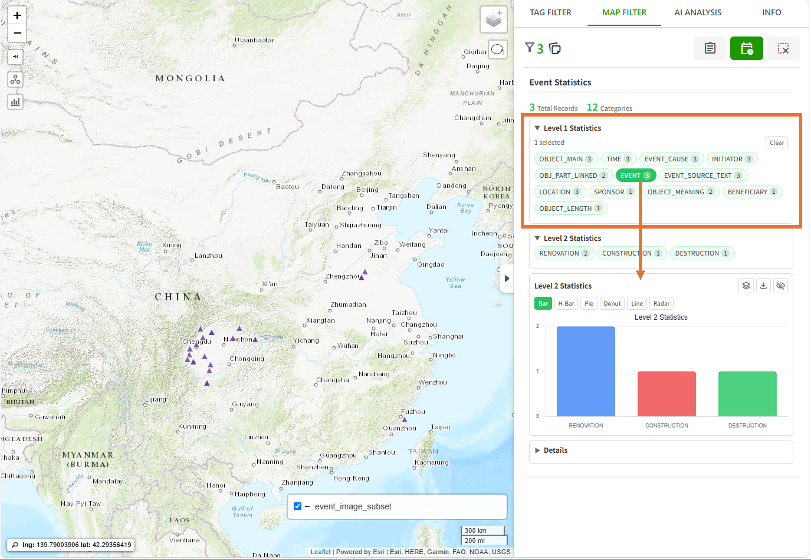
Click the Reset button to clear the current map filter area and display all records on the map.
Working with Filtered Results with AI-Assisted Analysis
MUNDa includes a built-in AI chatbot that lets you explore filtered results through conversation. You can ask specific questions, request summaries, or continue with follow-up questions.
The chatbot uses third-party AI services. Consider the provider's data-handling and privacy policies before submitting your data. We do not recommend using this feature with sensitive data or entire unpublished datasets.
- Use the spatial lasso draw an area on the map and filter the records within it. MUNDa organizes the matching records into a structured format for the AI model and automatically adds them to the prompt.
-
Click the settings gear icon to open the AI settings. Enter the API key for your chosen provider and select a model. You can adjust the model temperature, or add a custom model by specifying its provider and model ID.
Opening the AI Settings to Adjust the Model Temperature Currently supported models
-
Google
- Gemini 3.5 Flash
- Gemini 3.1 Pro
- Gemini 3.1 Flash Lite
- Gemini 3 Pro
- Gemini 3 Flash
- Gemini 2.5 Flash (Default)
- Gemini 2.5 Pro
- Gemini 1.5 Pro
- Gemini 1.5 Flash
-
Anthropic
- Claude Opus 4.7
- Claude Sonnet 4.6
- Claude Opus 4.5
- Claude Sonnet 4.5
- Claude Haiku 4.5
- Claude Opus 4.1
- Claude Sonnet 3.5
- Claude Opus 3
-
OpenAI
- GPT-5.5 Pro
- GPT-5.5
- GPT-5.4
- GPT-5.2
- GPT-5.2 Chat
- GPT-5.2 Pro
- GPT-5
- GPT-4o
- GPT-4 Turbo
-
xAI
- grok-4-0709
- grok-3-mini
- grok-3
-
DeepSeek
- DeepSeek-V4 Pro
- DeepSeek-V4 Flash
- DeepSeek-R1 (0528 Update)
- DeepSeek-R1
- DeepSeek-V3
- DeepSeek Chat
-
Google
- Review and edit the generated prompt. Add specific questions about the filtered results or ask the model to summarize the data.
- Click Send to submit your request. Continue the conversation with follow-up questions to explore the results further. Click the full screen icon to expand the AI chatbot panel and view the full conversation history.
Viewing Annotation Information as Filtered Results
After applying a Tag filter or Map filter, records that share the same location spread out into separate markers on the map. Click a marker to view the individual record's annotation information in the Info pane.
- Viewing Text Annotations in the Info Pane After Filtering Records
- Viewing Text Annotations in the Info Pane After Filtering Records
For more information, see the Viewing Data Point Details section.
Table Search
Besides exploring records on the map, MUNDa also presents imported data as a table, giving you an alternative view of your records. In the data table, you can view record details, search and filter values by column, and export the results. You can also search the place names in the OpenStreetMap database.
- Navigating and Filtering Records in the Data Table
- Search the table data in the data tool. The matching records appear on the map, as in the Search Tab feature in Map Search.
- Click a row to view the record's details in the Info pane.
- Hover over a cell to preview its full content.
- Type in the search field of a column to filter the table by that column's values./li>
Typing in the Search Field of the Annotation Column to Filter the Table by Records Containing "striped" - Export the whole or filtered table in
TSVorExcelformat. - Searching Place Names
- Click the search icon in the left-hand toolbar to open the data table dialog.
- In the Data Tool section, select OSM Database.
- Enter a place name in the search field, then press Enter or click the search button.
- MUNDa marks the results on the map. Click a marker to view its details in the Info pane.
Click the search icon in the left-hand toolbar to open the data table, where each row is a record and each column is a field. You can then:
MUNDa integrates the OpenStreetMap database, so you can search for any place name, view its location on the map, and see the details retrived from the database in the Info pane. This includes place names that appear in the data table.
06 Adjusting Display Settings
Click the settings icon in the left-hand toolbar to adjust the appearance of markers on the map.
Regular Marker Appearance
Regular markers represent the individual records of imported data. Customizing their appearance helps you distinguish between batches of imported data in different layers. You can adjust the following settings:
- Marker Color: Choose a color from the palette or enter a hex code.
- Marker Shape: Select a shape from the dropdown menu.
- Marker Size: Enter a number to set the size. A larger number produces a larger marker.
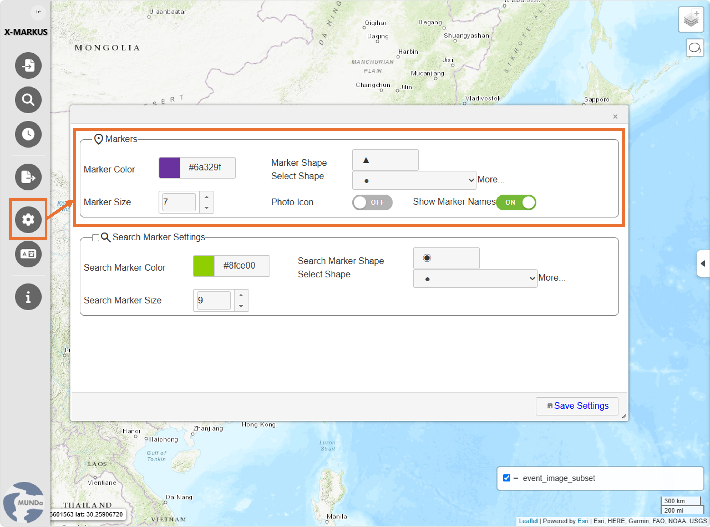
Filtered Result Marker Appearance
You can set a different marker style for filtered results to distinguish them from regular markers on the map. To enable these settings, tick the "Search Marker Settings" checkbox.
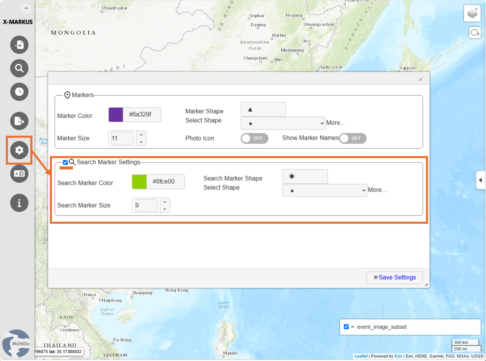
07 Exporting Data and Maps
MUNDa provides several options for exporting your data and maps. You can export the entire dataset, filtered subsets, or map images.
Exporting All Data
After you import your annotation data, MUNDa converts it into a data table. You can export the entire converted dataset inTSV, JSON, or EXCEL format for later use or for integration with other tools.
- Click the icon to open the export options.
- Choose the desired export format, then export the data.
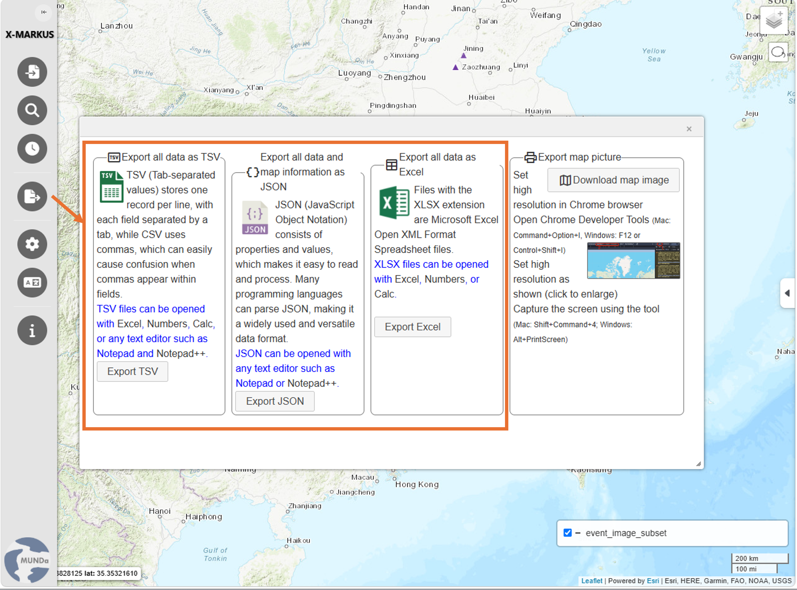
Exporting Filtered Data
After applying a filter in Map Search, Table Search, or Time Range Search, you can export the filtered results as a new data layer on the map or as a file in TSV, JSON, or KML format. You can use these files later or integrate them with other tools.
- Export as New Map Layer
- Export as Data Files
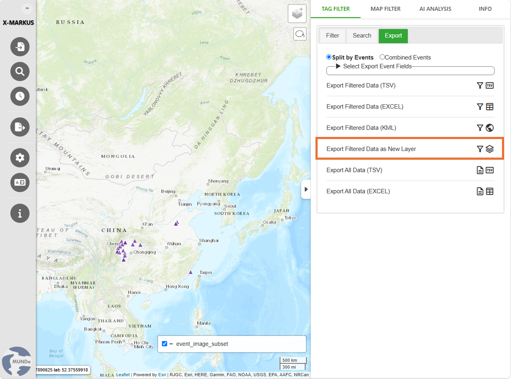

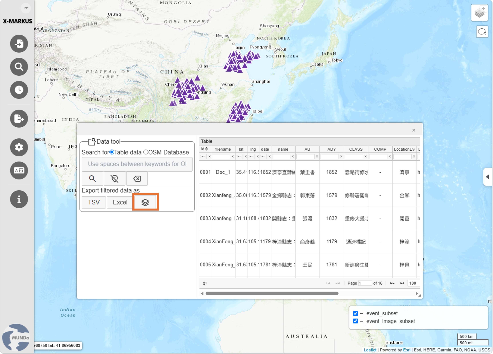
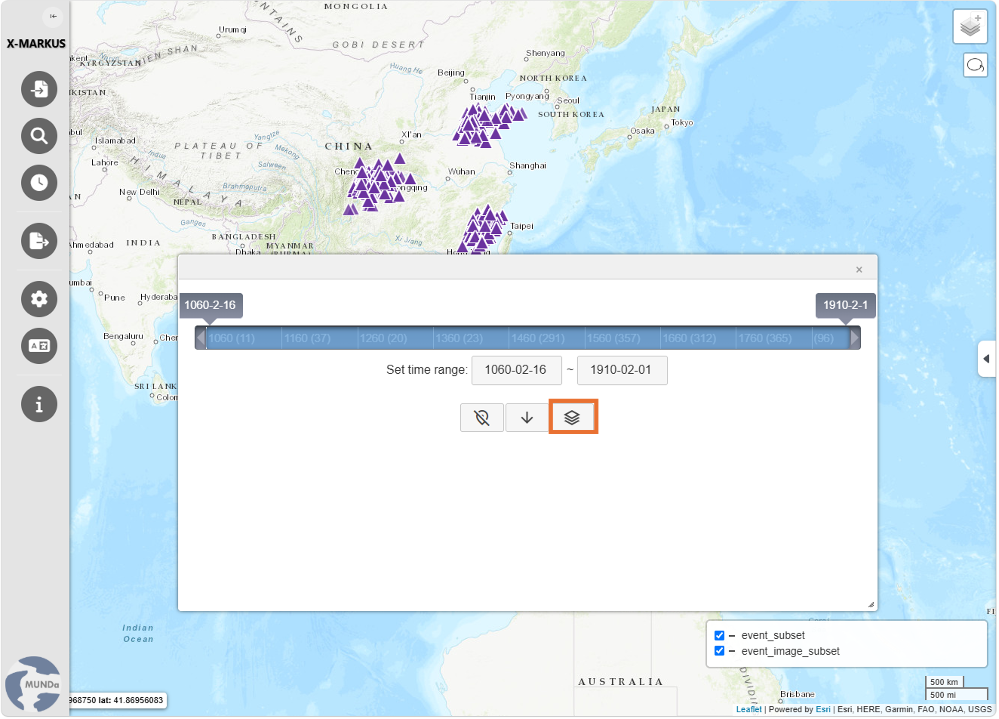